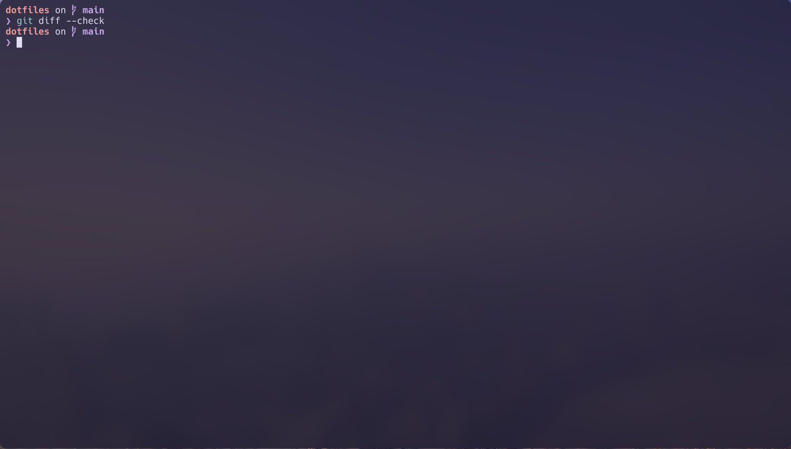

Determinate Nix
Owns the Nix installation and daemon. This is why nix.enable = false in nix-darwin.
matth@mac : ~/dotfiles
A practical reference for understanding, changing, maintaining, and recovering the Agentic Mac.

~/dotfiles
01 / System map
The setup is not one tool. It is a set of layers with clear ownership. Most confusion disappears once you know which layer owns a change.
Owns the Nix installation and daemon. This is why nix.enable = false in nix-darwin.
Applies macOS preferences, system configuration, and the Homebrew declaration.
Installs user CLI tools and manages Zsh, Starship, environment variables, and links.
Connects the existing /opt/homebrew installation to nix-darwin.
The Git repository is the durable source. Home paths point back to files in this repo.
WezTerm renders the terminal. Herdr keeps workspaces, panes, and agent sessions alive.
Keeps tokens in the Keychain and gates every authenticated use behind an approval prompt. Section 14 covers it.
~/.zshrc or the Nix store as the source.
| File | Owns | Apply method |
|---|---|---|
flake.nix |
Pinned inputs and module wiring | ./rebuild.sh |
configuration.nix |
macOS defaults, Homebrew formulae and casks | ./rebuild.sh |
home.nix |
Nix packages, Zsh, Starship, aliases, symlinks | ./rebuild.sh |
home/.config/wezterm/wezterm.lua |
Terminal appearance and startup behavior | Mostly hot-reloads; startup changes need Cmd+Q |
home/.config/herdr/config.toml |
Herdr keys and UI preferences | Restart or reload Herdr when needed |
home/AGENTS.md |
Shared behavior for Claude, Codex, and OpenCode | Direct link; new agent sessions read it |
home/.claude/settings.json |
Claude theme, TUI, status line, hooks, permission mode | Restart Claude when needed |
home/.claude/statusline.sh |
The status line Claude renders under the prompt | Direct link; takes effect on the next render |
home/.pi/agent/ |
Pi theme, local extensions, model overrides, settings | Direct links; /reload inside Pi |
home/skills/ |
Hand-authored agent skills, shared by all three harnesses | Direct link; new agent sessions read it |
bin/ |
Blessed Automic Vault launchers (cc, oc, fm-claude, no-mistakes-daemon) |
Run directly; editing one voids its blessing |
herdr-plugins/ |
Herdr startup plugins, installed into Herdr itself | Reinstall or restart Herdr |
Home Manager creates managed paths such as ~/.config/wezterm, but they ultimately point into ~/dotfiles through the stable ~/.dotfiles link. An application reads its normal home-directory path while Git records the real file in the repository.
02 / Daily loop
Use this loop for almost every configuration change. It keeps each decision visible and gives Git a clean recovery point.
Confirm you are editing the durable source, not a generated file.
Use Micro and keep the change narrow enough to understand from the diff.
git diff --check catches whitespace errors. The normal diff shows exactly what behavior changed.
Run the rebuild only for Nix-owned files. Test the behavior as an end user would experience it.
Stage only the intended files, write a factual message, push, and confirm the tree is clean.
cd "$HOME/dotfiles"
git status --short
micro configuration.nix
git diff --check
git --no-pager diff -- configuration.nix
./rebuild.sh
git add configuration.nix
git commit -m "Describe the behavior changed"
git push origin main
git status --shortgit status --short prints nothing. Silence is success for that command.
nix flake check --no-build
nix build .#darwinConfigurations.mac.system --dry-run03 / What to edit
The answer depends on whether Nix generates the result or an application reads a linked file directly.
home.nix/reload)git add path/to/new-file before rebuilding. You do not need to commit it first.
04 / Install software
Use Nix for ordinary command-line tools when they exist in nixpkgs. Use Homebrew casks for macOS applications. Keep Homebrew formulae for tools that are Homebrew-specific or integrate better there.
Edit home.nix and add the nixpkgs attribute under home.packages.
home.packages = with pkgs; [
bat
fd
fzf
git
hermes-agent.packages.${pkgs.stdenv.hostPlatform.system}.default
htop
jq
lazygit
micro
opencode
ripgrep
rsync
shellcheck
tmux
tree
treehouse.packages.${pkgs.stdenv.hostPlatform.system}.default
typescript
uv
wget
cowsay # example new package
nerd-fonts.hack
];Find the correct attribute at NixOS Package Search, then rebuild and verify with command -v tree.
Edit the brews list in configuration.nix. A formula from a third-party tap needs its tap declared too, and the tap must be marked trusted.
taps = [
{ name = "automic-vault/isotopes"; trusted = true; }
{ name = "my-monkeys/tap"; trusted = true; }
];
brews = [
"herdr"
"example-formula"
];Use this when the package is not in nixpkgs, when its Homebrew integration matters, or when the nixpkgs release branch is frozen on an older version than you want.
Edit the casks list in configuration.nix. Casks from a tap use their fully qualified token.
casks = [
"wezterm"
"claude-code"
"codex"
"my-monkeys/tap/opensuperwhisper"
"example-app"
];Confirm the cask token at Homebrew Cask search, then rebuild.
cd "$HOME/dotfiles"
git diff --check
git --no-pager diff
./rebuild.sh
rehash
command -v NAME || echo "NAME is missing"Delete the declaration, rebuild, verify, and commit. Nix packages disappear from the active user profile. Homebrew items are removed on the next rebuild, because the cleanup policy is set to uninstall.
homebrew.onActivation.cleanup = "uninstall". Every rebuild removes any Homebrew formula or cask that isn't declared in configuration.nix, so a fresh Mac reproduces exactly this set. Removed apps' data and config files are left in place; wiping those too would need "zap".
| Currently declared | Items |
|---|---|
| Nix user packages | bat, fd, fzf, git, Hermes Agent, htop, jq, lazygit, micro, OpenCode, ripgrep, rsync, shellcheck, tmux, tree, Treehouse (flake input), typescript, uv, wget, Hack Nerd Font |
| Homebrew taps | automic-vault/isotopes, my-monkeys/tap (both declared trusted) |
| Homebrew formulae | age, gh-cli (Automic Vault's hardened GitHub CLI), herdr, node, pi-coding-agent, docker (CLI only), ollama, llama.cpp |
| Homebrew casks | Automic Vault, WezTerm, OrbStack, Claude Code, Codex, OpenSuperWhisper, Mos, Obsidian, VeraCrypt, macFUSE |
nixpkgs-26.05-darwin release branch freezes Pi at an old version while Pi ships releases continuously, so pi-coding-agent comes from homebrew-core instead. Its bottle carries native modules that are ABI-bound to the Node major it was built against, and /opt/homebrew/bin precedes the Nix profiles on PATH, so a second Nix nodejs would only shadow the one Pi needs. Homebrew's node is therefore the machine's single Node, and it serves the ~/.npm-global CLIs too.
OrbStack is the container and Linux VM runtime, not Docker Desktop. The docker formula is only the CLI client; the daemon it talks to comes from OrbStack, which registers an orbstack Docker context and makes it current on first launch. The Homebrew client ships no subcommand plugins, so home.nix links ~/.docker/cli-plugins/docker-compose and docker-buildx straight at the binaries inside OrbStack.app. That keeps docker compose working without OrbStack's GUI onboarding step, which is what would otherwise create ~/.orbstack/bin and never runs on a headless setup.
home.nix sets NPM_CONFIG_PREFIX to ~/.npm-global and puts its bin on the PATH, so npm globals land in a writable prefix rather than alongside the runtime. First Mate's worker CLIs are installed there imperatively: gh-axi, chrome-devtools-axi, lavish-axi, tasks-axi, quota-axi, and gnhf. The no-mistakes validation pipeline lives at ~/.no-mistakes/bin (also on the PATH from home.nix); point NO_MISTAKES_LINK_DIR at that same directory when installing so it skips the one step that wants sudo. On a fresh Mac these need one reinstall pass; the README's "Agent worker tooling" section has the exact commands.
The no-mistakes daemon runs in the foreground from a herdr pane, not from its launchd agent. Start it with the nms alias (~/dotfiles/bin/no-mistakes-daemon) and leave it in its own pane; herdr keeps it across disconnects and restarts, and the nms-autostart herdr plugin recreates that pane after every session restore.
no-mistakes daemon start or daemon restart. Both silently break the pipeline's GitHub access, with no error to tell you. The alias is nms, not nm: nm is binutils' symbol lister.
When a rebuild changes the PATH, existing terminal sessions keep the old one: home-manager guards its session variables with __HM_SESS_VARS_SOURCED, and every nested shell inherits the guard, so agents launched from a pre-rebuild shell see command not found for tools that are actually installed. Open a fresh WezTerm tab (or reboot) and restart long-lived hosts like the herdr server from it.
05 / WezTerm + Micro
WezTerm owns the terminal window. Zsh owns the shell inside it. Starship draws the prompt. Micro is the default text editor.
Opens maximized as a normal macOS window. The frame is reduced to resizing, so standard title buttons are not shown.
Autosuggestions, syntax highlighting, Git branch state, command duration, and a compact prompt.
A conventional terminal editor with familiar selection, copy, paste, undo, and search behavior.
| Lua setting | Current value | Effect |
|---|---|---|
color_scheme |
rose-pine-moon |
The terminal color palette |
font |
Hack Nerd Font |
Text and prompt symbols |
font_size |
17.5 |
Your enlarged default text size |
window_background_opacity |
0.85 |
85 percent opaque, 15 percent transparent |
macos_window_background_blur |
50 |
Blur behind transparent terminal areas |
window_decorations |
RESIZE |
Frameless appearance while retaining resize support |
hide_tab_bar_if_only_one_tab |
true |
No tab strip until a second tab exists |
gui-startup |
maximize() |
Uses the available desktop without macOS full-screen mode |
window-focus-changed |
dim to 62% opacity | Unfocused windows fade their text and background so the focused one is obvious |
mouse_bindings |
PrimarySelection only |
Mouse selection never writes the system clipboard, so Universal Clipboard content is not clobbered |
06 / ripgrep + fzf
These are two separate tools that become especially useful together. rg, the ripgrep command, searches file contents. fzf gives you an interactive way to narrow and select lines from any list.
Ask: "Which files contain this word or pattern?" It recursively searches from the current directory and normally respects .gitignore.
Ask: "Which one of these results do I want?" Type a few characters, move through the narrowed list, and press Enter.
cd "$HOME/dotfiles"
rg "home.packages" # search every normal text file
rg -n "home.packages" home.nix # search one file with line numbers
rg -i "wezterm" # ignore upper/lower case
rg -F 'a.literal.value' # treat punctuation literally
rg -g '*.nix' "homebrew" # search only Nix files
rg -l "claude" # print matching filenames only
rg --files # list searchable project filespath:line-number:matching text. Start broad, then add a file path or -g filter when there are too many results.
By default, ripgrep skips hidden files, binary files, and ignored paths. Include hidden files while still excluding Git internals with:
rg --hidden -g '!.git' "statusLine" "$HOME/.claude"cd "$HOME/dotfiles"
rg --files | fzfThe pipe character | sends the file list produced by rg --files into fzf. Choosing a line prints that filename back to the terminal.
cd "$HOME/dotfiles"
file="$(rg --files | fzf)"
[ -n "$file" ] && micro "$file"cd "$HOME/dotfiles"
file="$(rg -l "homebrew" | fzf)"
[ -n "$file" ] && micro "$file"home.nix yet, so this guide only relies on the working fzf command.
07 / Herdr
Herdr sits inside WezTerm and keeps terminal work alive independently of the window. Closing WezTerm does not need to terminate your running agents.
A workspace groups a project. Tabs group tasks. Panes let you run an agent beside logs, Git, or another agent.
The side panel detects supported agents such as Claude and Codex and exposes their current state.
herdr # start or reattach
# Inside Herdr: Ctrl-b, release, then q to detach
herdr server stop # actually stop the session and its panesTwo non-key settings also live in home/.config/herdr/config.toml: onboarding = false skips the first-run tour, and agent_panel_sort = "spaces" groups the agents panel by space rather than by priority. Copy mode's own internal keys (v / Space to select, y / Enter to copy, q / Esc to cancel) are fixed by Herdr and not configurable; only the key that enters copy mode is.
herdr-plugins/nms-autostart is a Herdr startup plugin kept in this repo. Herdr runs it once after it restores a session and its API socket is ready. Session restore brings panes back as empty shells, so the plugin checks whether the no-mistakes daemon is running and, if not, recreates an NMS tab in the dotfiles workspace and starts the blessed launcher in it. That is why the pipeline daemon survives a full restart without you doing anything.
| Pane | Purpose | Example |
|---|---|---|
| Left | Primary implementation agent | cc or co |
| Top-right | Tests, server, or logs | npm test, docker compose logs -f |
| Bottom-right | Human review and Git state | git diff, git status --short |
08 / Agents
Claude, Codex, and OpenCode share one global instruction file and one skills directory. Pi and Hermes are separate agents with their own state, and First Mate is a writable agent distro that coordinates crews across registered projects.
ccRuns bin/cc, a blessed Automic Vault launcher that hands Claude a scoped GH_TOKEN and then execs claude --dangerously-skip-permissions. Claude acts without approval prompts and is not protected by the Codex workspace sandbox.
coRuns codex --sandbox workspace-write --ask-for-approval never. It can modify the active workspace, while access outside that sandbox is denied.
ocRuns bin/oc, a blessed launcher that injects ANTHROPIC_API_KEY so OpenCode authenticates without opencode auth login writing an auth.json to disk.
piInstalled from the homebrew-core pi-coding-agent formula. This repo owns only its theme, local extensions, model overrides, and generic settings - see "Pi's selective setup" below.
hermesInstalled from the official Hermes Nix flake. Run hermes setup once to select a provider, then run hermes for its terminal interface. Its credentials and mutable state remain local under ~/.hermes.
cd ~/firstmate && claudeThe repository itself is the distro, so bootstrap clones it instead of putting it in the read-only Nix store. Launch a supported harness from that directory, register projects in chat, and approve crew dispatch only after considering the parallel work it will start.
cc, co, and oc aliases are intentionally autonomous. Start them only in a repository you trust. The planned sandbox network isolation is a separate security project and is not implemented by these dotfiles.
# shared policy: one file, three harnesses
~/.claude/CLAUDE.md -> ~/dotfiles/home/AGENTS.md
~/.codex/AGENTS.md -> ~/dotfiles/home/AGENTS.md
~/.config/opencode/AGENTS.md -> ~/dotfiles/home/AGENTS.md
# hand-authored skills: one directory, three roots
~/.agents/skills/bro -> ~/dotfiles/home/skills/bro
~/.claude/skills/bro -> ~/dotfiles/home/skills/bro
~/.codex/skills/bro -> ~/dotfiles/home/skills/bro
# Claude's own configuration
~/.claude/settings.json -> ~/dotfiles/home/.claude/settings.jsonEdit home/AGENTS.md when a preference should apply to Claude, Codex, and OpenCode. Use project-local instruction files when a rule only belongs to one repository. Pi, Hermes, and First Mate maintain their own operational state and instructions.
~/.agents/skills is the shared skills root that the skills CLI installs into from GitHub, tracked in its own .skill-lock.json. Linking just the skills written here leaves that CLI free to manage the rest. OpenCode needs no link of its own because it also scans ~/.agents/skills and ~/.claude/skills; confirm with opencode debug skill.
gh auth login
cd "$HOME/firstmate"
claude
# In chat:
Add https://github.com/OWNER/REPO as a no-mistakes project.
Do not start any work yet.First Mate keeps its managed clones under ~/firstmate/projects and gives workers isolated worktrees. Use no-mistakes for its full validation and PR pipeline, direct-PR for a faster PR path, or local-only when no remote is required.
Its worker tooling is fully installed on this machine: tmux hosts each worker session, Treehouse provides the isolated worktree pool, tasks-axi is the durable task queue, quota-axi checks usage headroom before dispatch, gh-axi / chrome-devtools-axi / lavish-axi cover GitHub, browser, and report work, and no-mistakes gates deliveries. The lavish and gnhf agent skills are installed globally with the skills CLI; no-mistakes ships its own.
Crewmates launch through bin/fm-claude, a blessed launcher wired in via First Mate's untracked config/claude-launcher. It is a deliberate pure passthrough to claude "$@": First Mate's spawn script owns the flags, the model and effort selection, and the encoded launch brief, so rewriting the arguments here would break its adapter.
The no-mistakes daemon is a single shared instance serving every lane, so restarting it kills other lanes' in-flight pipeline runs. Leave it to First Mate; restart it by hand only when nothing is running.
Home Manager deliberately does not own ~/.pi/agent itself. It links exactly four things - the themes and extensions directories, plus models.json and settings.json as individual files - so Pi's authentication, sessions, trust decisions, caches, and downloaded package trees all stay local and untracked. Run /reload inside Pi after editing a linked file.
The local extensions directory is for repository-authored extensions only; third-party package code never belongs there. Two extensions live there today: a terminal-title extension that shows a spinner while Pi is working, and Pi Calm, a conversation-only presentation mode toggled with /calm and off by default. Calm hides collapsed thinking and the call/result shells for Pi's seven built-in tools, and replaces the working row with an animated widget; it never changes prompts, tool execution, model context, session data, or ordering, and /share and /export still use the complete stock transcript. Its on/off choice is stored locally, not in this repo. tests/pi-calm.test.sh is the shell test suite that proves all of that.
home/.claude/statusline.sh reads the JSON payload Claude pipes to it and renders model | directory | branch | context% | effort | output style. The branch is not in that payload, so the script asks Git for it. This is why jq is part of the Nix user package list.
home/.claude/settings.json also registers three SessionStart hooks - gh-axi, chrome-devtools-axi, and lavish-axi - which print ambient context into each new session, and sets the permission mode, TUI mode, and theme.
model and effortLevel in place whenever you use /config or /effort, and the live file is the repo file. A Git clean filter declared in .gitattributes strips those two keys on the way into a commit, so day-to-day model switching never shows up as a diff. Git refuses to take filter definitions from the repo itself, so bootstrap.sh configures the filter per clone - do not re-add the keys to the tracked file.
OAuth sessions, tokens, keychain entries, auth.json, histories, logs, and local plugin cache state should remain local. Configuration is reproducible; credentials must be restored interactively.
09 / Git + Lazygit
Git records each proven setup change. Lazygit is a visual terminal interface for reviewing and operating that same Git repository. GitHub protects the checkpoints from loss and lets the fork receive upstream improvements.
The file changed on disk, but its changes are not yet selected for the next commit.
These are the exact changes Git will include when you create the next checkpoint.
The snapshot has a message and ID. It remains local until pushed to GitHub.
cd "$HOME/dotfiles"
lazygitUse the arrow keys to focus changed files. The large pane shows the diff for the selected file.
Red lines are removed; green lines are added. Confirm every line belongs in the same checkpoint.
Press Space again to unstage it. Enter opens the staging view when you need to select smaller hunks or lines.
Enter a factual message and use the confirmation key shown in the interface. Current macOS releases commonly use Cmd Enter.
After leaving Lazygit, confirm the repository is clean with git status --short.
| Lazygit action | Underlying idea |
|---|---|
| Stage a file | git add path/to/file |
| Unstage a file | git restore --staged path/to/file |
| Commit | git commit -m "Message" |
| Fetch | git fetch |
| Pull | git pull |
| Push | git push |
cd "$HOME/dotfiles"
git status --short
git diff --check
git --no-pager diff
git add path/to/changed-file
git commit -m "Describe the behavior changed"
git push origin main
git status --shortadd alias runs git add ., which stages everything. Prefer git add path when you want a controlled checkpoint.
This repository has exactly one remote, and it is an SSH remote on purpose. An HTTPS remote plus the osxkeychain credential helper would let any process on the machine retrieve the GitHub token through git credential fill; an SSH remote is not extractable that way.
| Remote | Repository | Purpose |
|---|---|---|
origin |
git@github.com:MattH-ca/m.dotfiles.git |
The only remote. Push commits here; GitHub Pages publishes docs/ from it. |
There is no upstream. If you forked this repo and want to track it, add one yourself with git remote add upstream https://github.com/MattH-ca/m.dotfiles.git, then compare before merging:
git fetch upstream
git log --oneline --left-right main...upstream/mainLines beginning with < are unique to your fork. Lines beginning with > are new upstream. Review before merging, because your editor, Dock, packages, and safety choices will intentionally differ. Use a normal merge and resolve conflicts deliberately; avoid git reset --hard and avoid force-pushing a customized main.
CONTRIBUTING.md says so plainly. That is deliberate: a personal setup only stays useful while it keeps matching one machine. Fork it freely and make it yours.
home/.claude/settings.json passes through a Git clean filter that strips model and effortLevel, so those two keys never appear in a commit even though they are in the file on disk. That is the filter working. Section 08 explains why.
| Situation | Command |
|---|---|
Leave Git's (END) pager |
Q |
| Discard one uncommitted file change | git restore path/to/file |
| Unstage without discarding edits | git restore --staged path/to/file |
| Undo a published commit safely | git revert COMMIT_SHA |
| Confirm GitHub authentication | gh auth status |
10 / Updates
Pinned inputs give you repeatability. Updating is a deliberate change that should be reviewed, rebuilt, tested, and committed.
cd "$HOME/dotfiles"
git status --short
nix flake update
git --no-pager diff -- flake.lock
./rebuild.sh
git add flake.lock
git commit -m "Update Nix flake inputs"
git push origin mainThe release branches remain 26.05, while flake.lock advances to newer exact revisions on those branches.
configuration.nix sets homebrew.onActivation.autoUpdate = true, so each rebuild refreshes Homebrew's formula and cask data on its own. Upgrading the installed packages is still a separate, deliberate step.
brew outdated
# Upgrade a specific declared tool after reviewing the list
brew upgrade herdr
brew upgrade --cask wezterm claude-code codexbrew-src flake input through nix-homebrew and lives in a read-only Nix store path. brew update can therefore never upgrade Homebrew - it only refreshes formula and cask data from the API. So a current cask definition can land on a months-old Homebrew that cannot parse it, and the failure never says the version is the problem. It surfaces as unknown install step: <stanza>, a symlink source that "is not there", or artifacts installed in the wrong order.
cd "$HOME/dotfiles"
nix flake update nix-homebrew
./rebuild.sh11 / Recovery
The repository reproduces declared configuration. Authentication, private data, and undeclared Homebrew extras remain separate.
Use the correct macOS account name, sign in to GitHub, and confirm Apple Silicon architecture where expected.
Put the repository at ~/dotfiles. The bootstrap also maintains the stable ~/.dotfiles link.
Five steps: install or detect Determinate Nix, link the repo to ~/.dotfiles, configure the settings.json clean filter, check the configured username against yours, run the first nix-darwin switch, and clone First Mate into ~/firstmate.
The axi CLIs, gnhf, and no-mistakes are imperative and not managed by Nix. The README's "Agent worker tooling" section has the exact commands.
GitHub, Claude, Codex, Pi, Hermes providers, and any private services need an interactive login. Re-save the vault secrets and bless the bin/ launchers - none of that is in the repository.
Check commands, links, macOS defaults, Git state, and the actual UI.
cd "$HOME"
git clone https://github.com/MattH-ca/m.dotfiles.git dotfiles
cd "$HOME/dotfiles"
./bootstrap.shbin/ launchers - each one needs av bless again on a new machineskills CLI - only the hand-authored ones under home/skills/ are in this reponms-autostart Herdr plugin, which lives here but has to be installed into Herdr~/.config/micro12 / Troubleshooting
These are the failures we actually encountered and the reasoning behind each fix.
nix: command not found in an older shellThe shell started before Nix was added to its environment. Load the daemon profile, then open a fresh login shell.
source /nix/var/nix/profiles/default/etc/profile.d/nix-daemon.sh
exec zsh -l
nix --versionsudo: darwin-rebuild: command not foundsudo did not inherit the user path. The repaired rebuild.sh calls the absolute system path, so use the helper:
cd "$HOME/dotfiles"
./rebuild.shA real file already occupies a path Home Manager wants to manage. Inspect it, back it up if valuable, then remove or relocate it before rebuilding. During this setup, the conflicts were ~/.zshrc and ~/.config/starship.toml.
_brew completionA stale symlink can remain after completion packages change. Confirm it is a broken symlink before removing it, then regenerate the Zsh completion cache.
ls -l /opt/homebrew/share/zsh/site-functions/_brew
test -L /opt/homebrew/share/zsh/site-functions/_brew && \
rm /opt/homebrew/share/zsh/site-functions/_brew
find "$HOME" -maxdepth 1 -name '.zcompdump*' -delete
exec zsh -lMost Lua settings hot-reload. The gui-startup handler only runs when the WezTerm GUI starts. Use Cmd Q, then reopen WezTerm.
Read the active macOS values. A value of 1 means auto-hide is enabled; 0 means disabled.
printf 'Menu bar autohide: '
defaults read NSGlobalDomain _HIHideMenuBar
printf 'Dock autohide: '
defaults read com.apple.dock autohideconfiguration.nix declares both as auto-hiding, so both should read 1. The other declared defaults are dark mode, fast key repeat (KeyRepeat = 2, InitialKeyRepeat = 15), always-visible file extensions, Finder list view, no desktop icons, and tap to click.
Detach with Ctrl B, release, then Q. Run herdr later to reattach. Use herdr server stop only when you intend to terminate the session.
node is missingNode comes from the Homebrew node formula declared in configuration.nix, because the Pi formula's native modules are ABI-bound to it. After a rebuild, verify command -v node resolves to /opt/homebrew/bin/node. Do not install another ad hoc Node copy, and do not add a Nix nodejs back to home.nix - it would only shadow the one Pi needs.
command not foundThis happens after a rebuild that changes the PATH. Home Manager applies its session variables once and sets a guard, __HM_SESS_VARS_SOURCED, that every nested shell inherits - so a shell that started before the rebuild keeps the old PATH forever, and any agent launched from it inherits that too.
Open a fresh WezTerm tab (or reboot), and restart long-lived hosts like the Herdr server from that fresh tab, not just the Herdr TUI. Restarting only the TUI leaves the old server environment in place.
printf '%s\n' "$PATH" | tr ':' '\n'
command -v THE_MISSING_TOOLunknown install step or a missing symlink sourceHomebrew's own code is pinned by the brew-src flake input and cannot be upgraded by brew update, so a current cask definition has met a Homebrew too old to parse it. Update the input rather than working around the cask.
cd "$HOME/dotfiles"
nix flake update nix-homebrew
./rebuild.shThat is homebrew.onActivation.cleanup = "uninstall" doing its job: every switch removes any Homebrew formula or cask not declared in configuration.nix. Declare it in the right list and rebuild. The setting stays at "uninstall" rather than "zap" precisely so an accidental omission costs you the package, not its data.
nm: command not found, or the daemon will not startThe alias is nms, not nm - nm is binutils' symbol lister. Run nms in a herdr pane and leave it in the foreground. Never reach for no-mistakes daemon start or daemon restart as a fix; both silently break the pipeline's GitHub access without printing an error.
cc, oc, or the daemonExpected. The launchers in bin/ are blessed without launcher endorsement, so each launch raises one approval dialog on purpose. If a launcher stops working entirely instead, check whether the file was edited - any edit voids its blessing, and it has to be re-blessed with av bless against the exact path.
(END)You are in Git's pager, not a frozen terminal. Press Q. Use git --no-pager diff when you want output printed directly.
13 / Audit
This audit is read-only. It checks repository cleanliness, important command paths, macOS behavior, managed links, GitHub authentication, and services.
cd "$HOME/dotfiles"
printf 'Repository: '
test -z "$(git status --porcelain)" && echo CLEAN || git status --short
printf 'Menu bar autohide: '
defaults read NSGlobalDomain _HIHideMenuBar
printf 'Dock autohide: '
defaults read com.apple.dock autohide
for cmd in nix brew darwin-rebuild micro node fzf jq rg lazygit gh herdr hermes \
claude codex opencode pi wezterm av treehouse tmux uv shellcheck \
tsc docker no-mistakes
do
printf '%-16s %s\n' "$cmd" "$(command -v "$cmd" || echo MISSING)"
done
printf '\nManaged instruction links:\n'
ls -l "$HOME/.claude/CLAUDE.md" "$HOME/.codex/AGENTS.md" "$HOME/.config/opencode/AGENTS.md"
printf '\nManaged skill links:\n'
ls -l "$HOME/.agents/skills/bro" "$HOME/.claude/skills/bro" "$HOME/.codex/skills/bro"
printf '\nManaged Pi links:\n'
ls -l "$HOME/.pi/agent/themes" "$HOME/.pi/agent/extensions" \
"$HOME/.pi/agent/models.json" "$HOME/.pi/agent/settings.json"
printf '\nVault health:\n'
av doctor
printf '\nFirst Mate clone:\n'
git -C "$HOME/firstmate" status --short --branch
printf '\nno-mistakes daemon:\n'
no-mistakes daemon status
printf '\nGitHub authentication:\n'
gh auth status
printf '\nHomebrew services:\n'
brew services listno-mistakes daemon status reports the daemon is not running, start it with nms in a herdr pane. Do not "fix" it with no-mistakes daemon start.
14 / Automic Vault
This is the load-bearing security layer of the whole setup, and the one piece that makes the rest of it safe to run. Everything else here is about giving agents more autonomy; this is the counterweight.
.env, or an ambient credential helper can read it too - and an agent that reads one has no obligation to tell you. Declaring cc and co as no-prompt aliases only makes sense because this layer exists underneath them.
Automic Vault answers that by moving secrets into the macOS Keychain and putting a human-approval gate between your tools and those secrets. It ships in this setup as a Homebrew tap, a hardened gh, and a menu bar app.
Tokens and keys are stored in the macOS login Keychain instead of plaintext config files, so they never sit on disk for a process to read.
A hardened tool is replaced on PATH by a codesigned build that only it can unlock, and every authenticated use routes through the gate. Here, gh is hardened.
When a gated secret is requested and the current trust level cannot auto-approve it, the menu bar app raises a notification for you to approve or deny.
av (the app is spelled "Automic Vault," not "Atomic"). av help lists everything; av doctor reports whether the hardened tools are healthy.
Three declarations install it, plus one PATH entry so the av command resolves. A fresh rebuild.sh brings all of this along, which is why an agent's first gh call can surface an approval prompt.
# configuration.nix - trusted tap, hardened gh, the app
taps = [ { name = "automic-vault/isotopes"; trusted = true; } ];
brews = [ "automic-vault/isotopes/gh-cli" ];
casks = [ "automic-vault" ];
# home.nix - put the av CLI on PATH
home.sessionPath = [ "/Applications/Automic Vault.app/Contents/MacOS" ];bin/Four scripts in this repo start a tool with exactly one secret already in its environment. Each has an av inject shebang, so the secret exists only inside that process and never touches disk or a command line.
| Launcher | Starts | Why it exists |
|---|---|---|
bin/cc |
Claude Code | Gives Claude a scoped GitHub token up front, so routine gh calls do not each raise a prompt. |
bin/oc |
OpenCode | Supplies the Anthropic key directly, so opencode auth login never writes plaintext credentials. |
bin/fm-claude |
A First Mate crewmate | Same token for spawned workers; a pure passthrough so First Mate keeps owning the flags. |
bin/no-mistakes-daemon |
The validation pipeline daemon | Runs it in the foreground from a herdr pane, which is the only supported way to start it. |
av bless against the same path - and note that this is also the protection working: an agent cannot append a line to a blessed script and keep its secret access.
av help prints this list; it is short enough to learn in one sitting.
| Command | What it does |
|---|---|
av save <key> |
Prompt for a secret value and store it in the login Keychain. The value is never typed on a command line. |
av list |
List the names of stored secrets. Never prints values. |
av inject +KEY [--] <cmd> |
Run one command with those secrets in its environment, and nowhere else. |
av inject -- <cmd> |
Run an already-approved script. |
av bless <path> |
Review and approve one exact file for secret access. |
av harden <tool> |
Replace a tool with a hardened build and migrate its credentials into the Keychain. |
av unharden brew |
Temporarily restore stock Homebrew - needed for some cask migrations. |
av doctor [<tool>] |
Verify the installed hardening is healthy. |
av scan |
Audit secrets and configuration, reporting findings by severity. |
av hardeners --json |
Show every available hardener and which ones apply to this machine. |
av open [--secret-gate <id>] |
Open the menu bar app, optionally straight to one tool's gate settings. |
Prints one line per tool it manages and ends with No problems found when everything is healthy. Run it after any rebuild that touched Homebrew, and on a new machine before trusting the setup.
A severity-ranked report, not a pass/fail gate. A wall of HIGH findings is the report doing its job. On a Nix and Homebrew Mac the PATH-ordering findings are inherent and expected.
A hardener does more than wrap a binary: it migrates that tool's existing credentials out of its plaintext config and into the Keychain, then leaves a small launcher on PATH in its place. Automic Vault ships around fifty of them, covering the usual credential-bearing CLIs - aws, docker, brew, gh, stripe, supabase, node, sudo and many more. This config declares the hardened GitHub CLI as a Homebrew formula so a rebuild installs it; anything else is an interactive choice.
av hardeners --json | jq -r '.hardeners[]
| select(.applicable) | "\(.name)\t hardened=\(.hardened)"'
av harden sudo # e.g. approve sudo with Touch ID instead of a password
av doctor # confirm it is healthy afterwardsInstead of exporting a key in a dotfile or a .env, keep it in the vault and hand it to one command for the duration of that command only.
av save OPENAI_API_KEY # prompts for the value; stores it in the Keychain
av inject +OPENAI_API_KEY -- python train.py # the key exists only inside this processFor a script you run often, put av inject in its shebang and av bless the file - the same pattern the bin/ launchers above use.
#!/usr/local/bin/av inject +OPENAI_API_KEY /bin/zsh -f
python eval.py
# then approve the exact file once:
av bless ./run-eval.shgh uses a Secret Gate with per-app trust levels, managed in the menu bar app (av open --secret-gate gh). Higher trust means fewer prompts for routine reads, at the cost of a checkpoint you would otherwise have seen - so choose it deliberately, per app, rather than reaching for the most permissive level. Raw token extraction (gh auth token) always prompts regardless.
The rebuild installs the tap, the hardened gh, the app, and the PATH entry. Everything after that is deliberately manual, because it is exactly the part that must not be reproducible from a public repository.
It needs to be running for approvals to reach you. Confirm the CLI resolves with command -v av.
av save KEY for each one. Keychain contents do not travel with the repo, and you should be the one typing the values.
Blessings are per-file and per-machine. Every script in bin/ needs av bless again before its alias works.
av doctor should report no problems, and av list should show the names you expect.
for f in cc oc fm-claude no-mistakes-daemon; do
av bless "$HOME/dotfiles/bin/$f"
done
av doctorAn HTTPS remote plus the osxkeychain credential helper lets any process retrieve your GitHub token through git credential fill. Prefer SSH remotes, which are not extractable that way.
git remote set-url origin git@github.com:OWNER/REPO.git
printf 'protocol=https\nhost=github.com\n\n' | git credential reject # drop the cached token15 / References
Almost nothing here was invented for this repository. It is an assembly of other people's projects, and the parts that feel clever are usually theirs. This section credits what it was built from, then points at the documentation worth reading.
A large share of the orchestration tooling is also Kun Chen's. First Mate coordinates the crews, Treehouse gives each worker an isolated worktree, no-mistakes gates every delivery, and the axi CLIs are what the agents actually reach for.
~/firstmate.
Treehouse
Manage worktrees without managing worktrees. The isolated pool workers run in.
no-mistakes
The push validation pipeline: review, tests, lint, docs, PR, and CI.
Lavish and the axi CLIs
Agent-facing tools for GitHub, the browser, tasks, quota, and visual review.
gnhf
"Good night, have fun" - the overnight autonomous-loop orchestrator.
fd, bat, and jq alongside it.
fzf
Fuzzy selection for any list.
OrbStack
Containers and Linux VMs, in place of Docker Desktop.
Rosé Pine
The palette behind the terminal, editor, and Pi themes.
Nerd Fonts
Hack Nerd Font, which is why the prompt glyphs render.
OpenSuperWhisper
Local dictation, installed from the my-monkeys tap.
docker CLI here.
Try a broader term such as Nix, Git, Herdr, or rebuild.